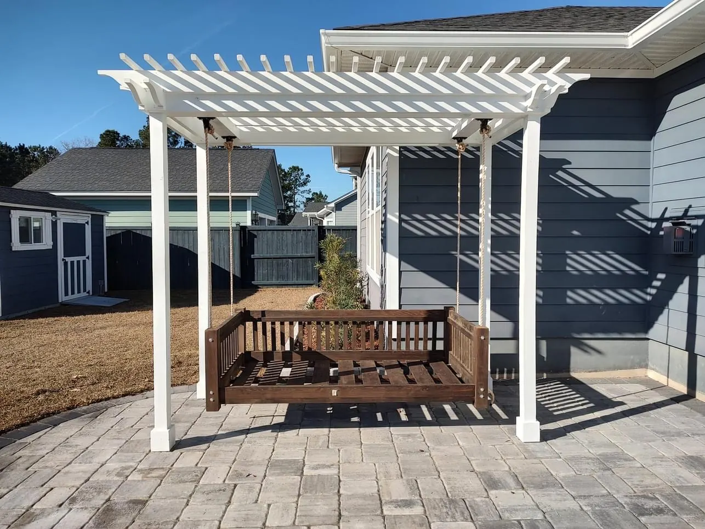

About Our Charleston, SC Landscape Designers

A Small Family Company Building Outdoor Spaces That Last
Cramers Landscaping is a family company based in Summerville, serving homeowners across Charleston and the Lowcountry. Doug Cramer opened the business in 2016 after a lifetime in landscaping. Today we focus on high-end residential work: custom landscapes, hardscapes and outdoor structures designed around the people who live with them.
We are a small company, and that is what makes the difference. Doug and his son Zach handle the site visits and the designs themselves, and one of them is on the job every day until your project is finished. The people who design your space are the same people who build it.

Why Homeowners Choose Cramers Landscaping
Custom Design, Not Production Builds
A lot of companies are built around production, repeating the same build over and over and calling it the standard. We take a different approach. We spend real time in the design stage, learning how you want to use your space so the finished design suits your home and your lifestyle. Our knowledge of classical architecture guides the proportions and details of every pergola, pavilion and outdoor kitchen, so each structure has the charm of something that belongs to the house.
You Work Directly With Doug and Zach
There is no hand-off to a salesperson or a crew you have never met. Doug and Zach do the site visits and the designs, and they are on the job doing the work or managing it until the project is complete. You always know who to call, and the person who answers knows your project.
Built to Last
We stay current on the latest building science, standards and best practices, so your project is done right below the surface as well as on top. Cramers Landscaping is licensed and insured, and we stand behind our work with a one-year workmanship warranty and a warranty on plants.
Our Mission

We strive to constantly learn, grow, and deliver the best possible landscaping experience. For us, success means building landscapes that create lasting value for our customers—not just for the season, but for decades to come. Every service, product, and project is approached with long-term durability, functionality, and beauty in mind.
Our Values
Integrity
We believe in doing what’s right, even when no one’s watching. Every job is completed to the highest standards of our capabilities, with no shortcuts.
Communication

From start to finish, you’ll know exactly where your project stands. We’re transparent, responsive, and thorough in our planning.
Craftsmanship
We don’t settle for "good enough." Whether we’re installing drainage systems, building a retaining wall, or maintaining your landscape, our attention to detail and quality is unmatched.
Adaptability

We’re proactive and forward-thinking. Your landscape today should still work for your life five years from now. That’s why we build flexible, scalable outdoor environments designed to grow with your family or property.

What We Do
Cramers Landscaping is a full-service landscaping company offering:- Landscape Installation
- Hardscape Installation
- Irrigation Installation and Maintenance
- Landscape Enhancements & Design
- Tree & Shrub Trimming
- Mulching & Bed Maintenance
- Grading & Drainage Solutions
- Site Structures: Pergolas, Patios, and Fencing

Meet The Cramer Family
Doug has worked in landscaping his whole life, with more than 30 years of experience in the Lowcountry. Before Cramers Landscaping he owned DC Landscaping, which focused mostly on commercial work around the Lowcountry. In 2016 he opened Cramers Landscaping and turned his focus to the high-end residential work we do today.
Zach grew up in the business, working for the company during summer breaks before joining full time after graduating. He helped grow Cramers Landscaping into what it is now: earning a builder's license, keeping the company at the forefront of building science and standards, and raising the bar for craftsmanship and design.
Doug owns the company, and he and Zach run every job together as partners in all of our operations. Our family name is on every project we build.
Where We Work
Based in Charleston, we proudly serve residential and commercial clients throughout the greater Charleston metro area. Our primary service areas include:
- Charleston Landscape Design & Build
- Summerville Family Yards & Patios
- Johns Island Custom Landscapes
- Isle of Palms Salt-Air Landscaping
- North Charleston Landscaping & Drainage
- West Ashley Drainage & Yard Upgrades
- Daniel Island, SC
- Sullivans Island Coastal Landscapes
- Mount Pleasant Landscapes & Hardscapes
- James Island, SC
- Kiawah Island Estate Landscaping
- Folly Beach Coastal & Rental Landscapes
Get to Know Cramers Landscape
We don’t just create beautiful landscapes—we create long-lasting partnerships with our clients. Whether you're managing a residential home, new construction, rental property, or commercial site, Cramers Landscaping is the name Charleston trusts for quality, care, and results.
Contact us today to schedule a consultation and see why more homeowners and builders are choosing Cramers Landscaping.